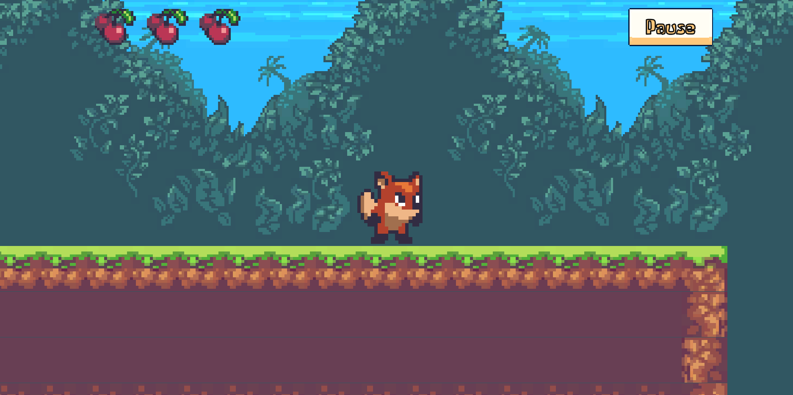
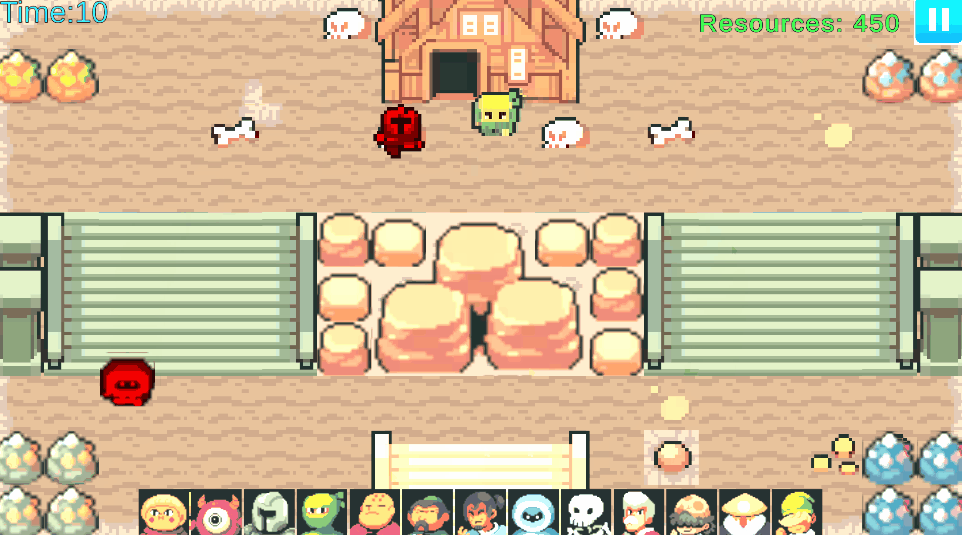

Space Invaders

Este Space Inavders esta hecho en processing se programo desde el movimiento y disparo player, como el movimiento y disparo de los enemigos. Cada que un alguna de las columnas exteriores de los enemigos toca el borde de la ventana se le multiplica la velocidad por -1 y se le aumenta 20px en su posicion para que no choquen entre si y se respeten los espacios. El movimiento del player es simple, se le suba una velocidad en su eje x cada que presionas las flechas de direccion ya sea derecha o izquierda y detecta si choca con el borde de la panatlla paa que no se salga de la ventana, para disparar solo se detecta si el jugador pulso el click izquierdo del mouse lo que provoca que se instancie una bala la cual tiene una velocidad en y que hace que suba, esta misma bala la ocupan los enemigos solo que cuando es isntanciada por un enemigo se invierte la velocida para que caiga.
Little Red Fox
Little Red Fox es un platformer 2D donde eres un pequeño zorro que trata de llegar a su casa sano y salvo. Se porgramdo el movimiento del zorrito junto con su salto que ocupa una fuerza de salto y se le aplica una fuerza de impulso. Para los enemigos se les hizo una IA super basica que solo detecta si se queda sin piso con un overlap circle que funciona como su percepcion, si ve que se queda sin piso rota 180 grados y seguir con su camino. El jugador puede eliminar a los enemigos si los aplasta con el salto y esta diseñado para ser un videojuego mobil pero para algo mas practico se importo para WebGL.
Disponible en: Link
Ninja Tower Defense
Ninja Tower Defense es un tower defense 2D donde se programo la IA de los agentes por completo, haciendo que tengan un PercpetionManager, DesicionManager, ActionManager y un MovementManager. Los agentes cuentan con un circle collider que funciona como sus ojos y oidos, dependiendo de lo que logren percebir y en base a sus estadisticas de vida, aliados que tienen a su alreder deciden si atacan o se retiran, algunos agentes no les importa si tiene poca vida iran a atacar, otros retrocederan y esperaran a sus aliados o buscaran a alguien que los cure. Tambien se programo la IA contra la que compites, la cual tambien tiene su PercpetionManager, ActionManager y su DesicionManager, toma desiciones en base a cuantos enemigos hay en el terreno, cuantos recursos tiene disponibles, cuanta vida tiene su base, el estilo de juego del jugados, si esta jugando de manera pacifica, agresiva o ideal.
Fue programado por Andrlan Dev, El Vato OG y ZeroGhost.